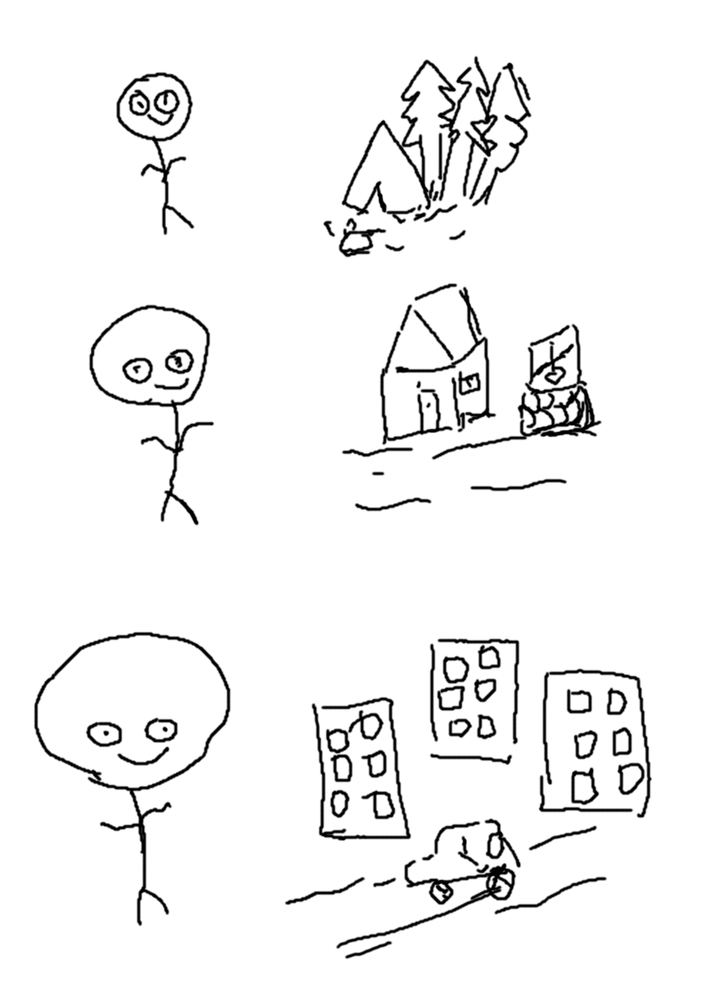

Развитие мышления и человеческие чувства
Поверхностный взгляд на развитие мышления
Иногда развитие человеческого мышления представляет следующим образом: как увеличение количества условных рефлексов, высшим проявлением которых является вторая сигнальная система — речь. Сначала у человека было мало таких условных рефлексов и постепенно, поколение за поколением, число таких рефлексов росло, развивался мозг и постепенно человечество пришло к современному мышлению.

В этой концепции под человеком, обычно неявно, подразумевают отдельного человека — индивида и его ощущения. А под внешнем миром — всё, что окружает человека: природу и общество.
Таким образом эволюция мыслительной способности представляется в виде плавного развития мозга и системы условных рефлексов человека, которые проходят под влиянием ощущений из внешнего мира. Конечно, и это подчеркивают те кто придерживаются этой концепции, мозг развивается только если человек участвует в общественной практике. Однако, такой подход не объясняет ни само мышление, ни его связь с обществом. Связь с обществом остаётся только в виде фразы или констатации факта без его объяснения.
Общественная природа развития мышления
Процесс развития мышления проходит не в эволюции мозга человека, и не в развитии набора условных рефлексов, и не в развитии второй сигнальной системы. Развитие мышление проходит на другом уровне — на уровне общества и выражается в материальной культуре — физическом проявлении общественного сознания и человеческого мышления. Увеличение и усложнение материальной культуры и общественных отношений и есть развитие мышления.
И именно с этого общественного уровня мышление "переходит" в отдельного человека. Это мышление связано и с мозгом и со способностью индивида говорить и чувствовать, но происхождение и развитие мышления не найти ни в мозге, не в чувствах человека. Важно подчеркнуть: не процесс мышления, а процесс развития мышления. Процесс развития мышления не находится на уровне индивида. На уровне индивидуального сознания можно изучить только процесс рождения психики отдельного человека, который, уже более тесным образом, связан и с мозгом и с ощущениями.
Процесс развития мышления, история и причины его появления не могут быть объяснены из развития (эволюции) системы условных рефлексов, так как само понятие условных рефлексов относится к индивиду, а развитие мышления — общественный процесс, процесс проходящий на уровне общества. У общества нет условных рефлексов. Аналогичная ситуация и с ощущениями. Введение ощущений и условных рефлексов в вопрос про появление мышления (или в основной вопрос философии) это смещение темы на психофизиологическую проблематику — как появляется сознание индивида и как оно связано с телом индивида. При таком перемешивании происходит путаница, не позволяющая ответить на эти вопросы.
Человеческие и дочеловеческие ощущения
Процесс «усвоения» мышления индивидом тоже не прост. Отрицать необходимость ощущений не получится: очевидно, что если тело ребенка будет находится в каком-то аналоге камеры сенсорной депривацииopen in new window, в которой будут отсутствовать все ощущения, то мышление не появится. То же самое может произойти при органических повреждениях всех рецепторов или их связей с мозгом. Несмотря на это, являются ли ощущения определяющими в этом процессе?
Человек становится человеком, в том числе, когда обретает способность чувствовать человеческим способом. Это означает, что говоря об ощущения можно говорить о разном: ощущения в физическом смысле, как влияния физических тел на физику рецептора, ощущения в биологическом смысле, как ощущения животного — дочеловеческие чувства и человеческие ощущения.
Новая целостность всегда развивается на основе предыдущей целостности. Вследствие этого, новая целостность вбирает в себя некоторую логику предыдущей, ту логику из которой сама и порождается. Однако, в рамках новой целостности эти предпосылки — те части старого на основе которого появилось новое, могут играть уже совсем другую роль. Человеческая чувственность развивается из биологической и содержит в себе как физическую так и биологическую природу чувственности. Вместе с этим, человеческая чувственность уже не сводится к восприятию внешнего мира посредством рецепторов.
Индивид конструирует свои ощущения с помощью метода которому он обучился при взаимодействии с человеческой культурой. Мышление индивида отражает объекты внешнего мира, но это отражение проходи не в форме ощущений. Ощущения: зрение, слух, осязание и другие являются только источником для конструирования в сознании индивида внешнего мира, а это конструирование вместе со своим результатом — выработанный обществом способ отражать внешний мир. С помощь этого общественного преобразователя ощущений индивид может точно, настолько насколько позволяет современное общество, отражать внутри себя как природу и и само общество.
Из этого следует, что природа, в самом общем смысле, не дана индивиду в ощущениях. Чтобы отражать (понимать) законы природы, человек должен изучить способ восприятия который за тысячи лет произвело общество. Только получив этот инструмент, ощущения могу стать источником новых знаний о мире.
Мысли и дополнения
Чтобы разобраться в теме нужно отыскать сходства и различия основного вопроса философии и психофизиологической проблемы, а так же определить различие в предметах наук: философии, психологии и физиологии высшей нервной деятельности.
Отношение индивидуального (личного) и общественного раскрыто поверхностно. Этот вопрос требует детализации.
Ссылки
Статьи Э. Ильенкова «Откуда берется ум?»open in new window и «Становление личности: к итогам научного эксперимента»open in new window описывают идею общественной природы ума.
Статья Э. Ильенкова «О воображении»open in new window детализирует понимание человеческого ощущения как практического акта, в прямом смысле этого слова.
Стиль изображений взять из ссылок на Тима Урбанаopen in new window в книгах Максима Дорофееваopen in new window.